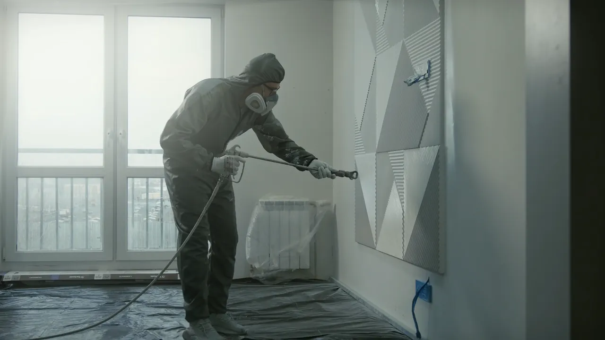
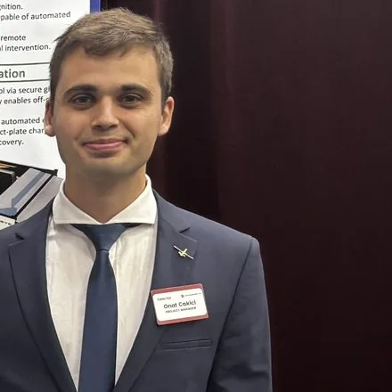

Robots for the finishing trades
We start with paint. Urban Robotics is a robotics company in Miami building P2, an interior painting robot for jobsites and homes. P2 is in development: the CAD design is done, and bench tests on real walls come next.
Why paint
Painting is slow, physical work that every building needs: ladders, tape, plastic sheets and long days, and most of the bill is labor. Our first design, P1, was a spray robot for commercial interiors. Working on it showed us that a home is different: the furniture stays, and spray means masking everything. So P2 is designed to roll, the way a painter does, and to carry its tools on one arm: paint first, with spray, sand and drill planned for the same Tool Port.

How we work
- Standard parts
- P2 is designed around parts we can order: a collaborative arm, LiDAR, depth cameras and a standard 9 in roller. A repair should be a part swap, not a trip back to us.
- Failure modes first
- Before building, we listed 43 ways P2 could fail, from a drip to a tip over, and gave each a design answer and a test.
- Numbers you can check
- Every figure on this site is a design target, a simulation result or a sourced fact, and we say which.
- Safety on site
- P2 is designed to pause when a person or a pet comes close. During pilots, our team stays on site.
Where we are
The CAD design of P2 and its four tools is done, with a full room simulation, reach and stability checks and a failure analysis.
Next
A bench rig with the arm, the Tool Port and the paint tool, painting test walls to measure drips, lap marks and cut lines.
Then
The full robot, and pilot jobs in homes and apartments in South Florida.
Founder

Onat Cakici
Founder
Onat leads the design of P2: the CAD model, the painting simulation and the failure analysis. He is an aerospace engineer, with a B.S. from the Florida Institute of Technology (2025). Before Urban Robotics, he led a nine engineer team that built an autonomous VTOL drone for early wildfire detection.
The company
- Name
- Urban Robotics Technologies, Inc., a Delaware corporation
- Based in
- Miami, Florida
- First product
- P2, an interior painting robot for jobsites and homes
- Stage
- In development: the CAD design is done, bench tests come next
- Contact
- info@urbanrobotics.com, for pilots, investors and press
Talk to us
Build, paint or manage apartments in South Florida? Help us plan the first night shifts on real jobs. Homeowners are welcome too. It starts with a 15 minute call about how you repaint today: what it costs, how long it takes and what slows it down. Nothing is for sale yet.
Write to info@urbanrobotics.com. This site has no forms, cookies or tracking.